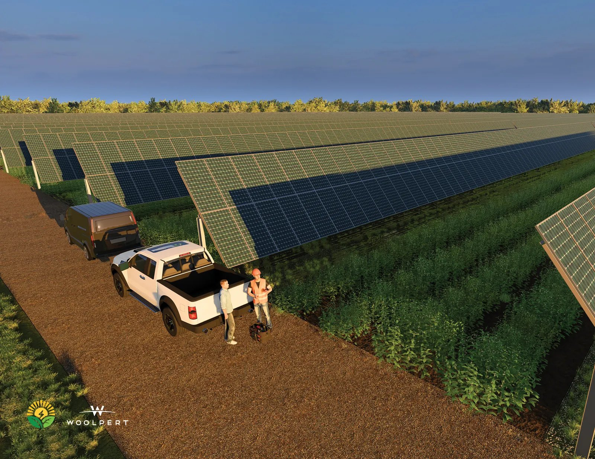
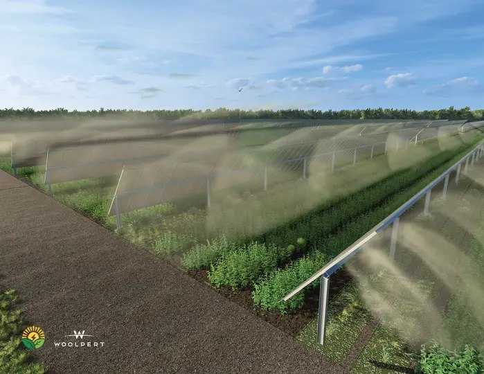
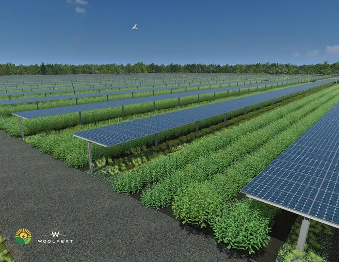
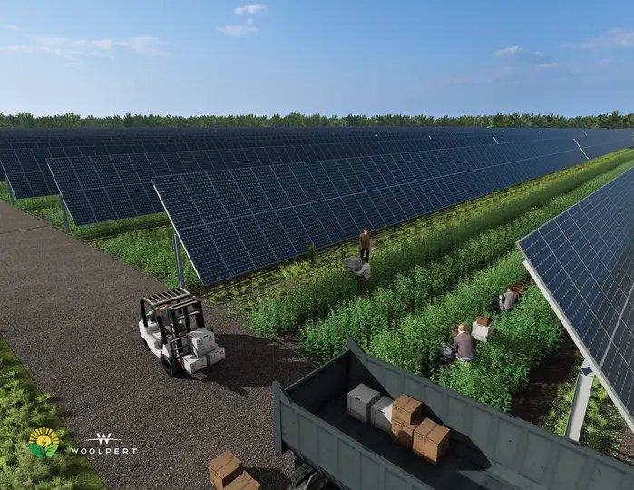
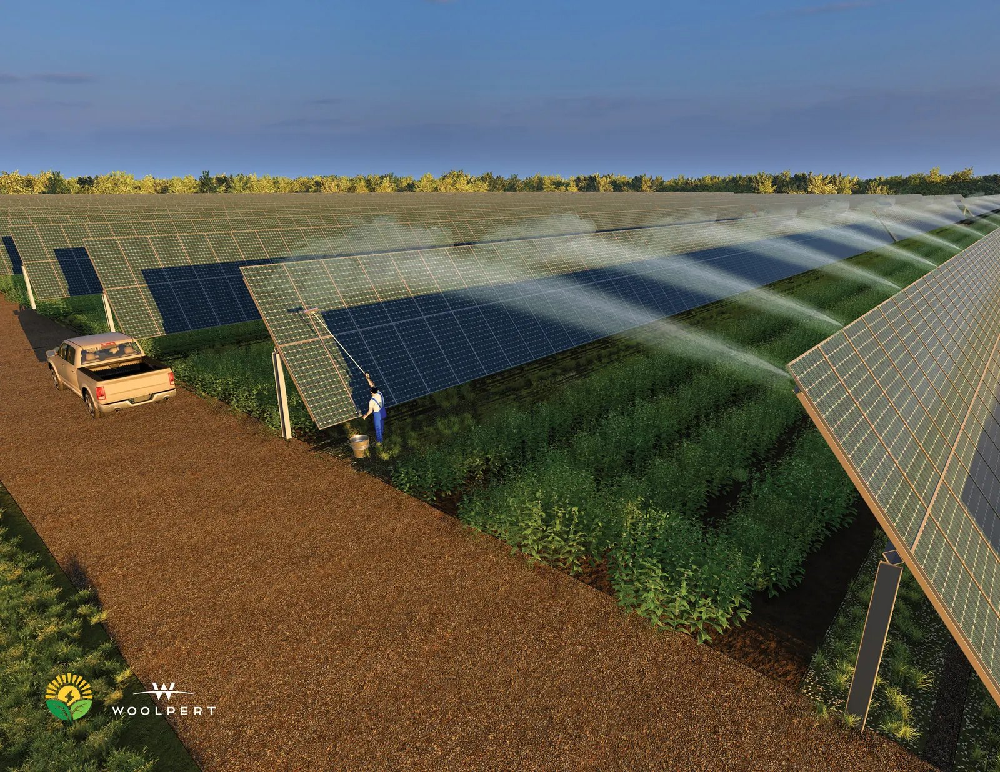
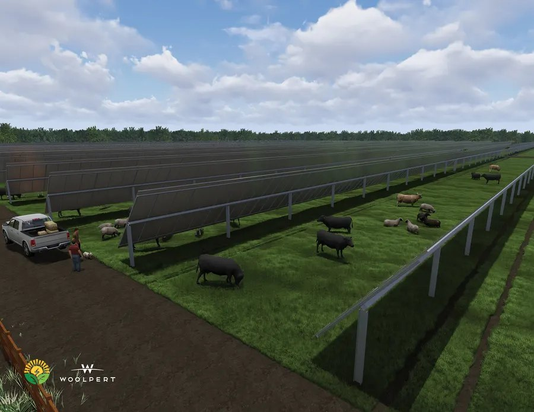
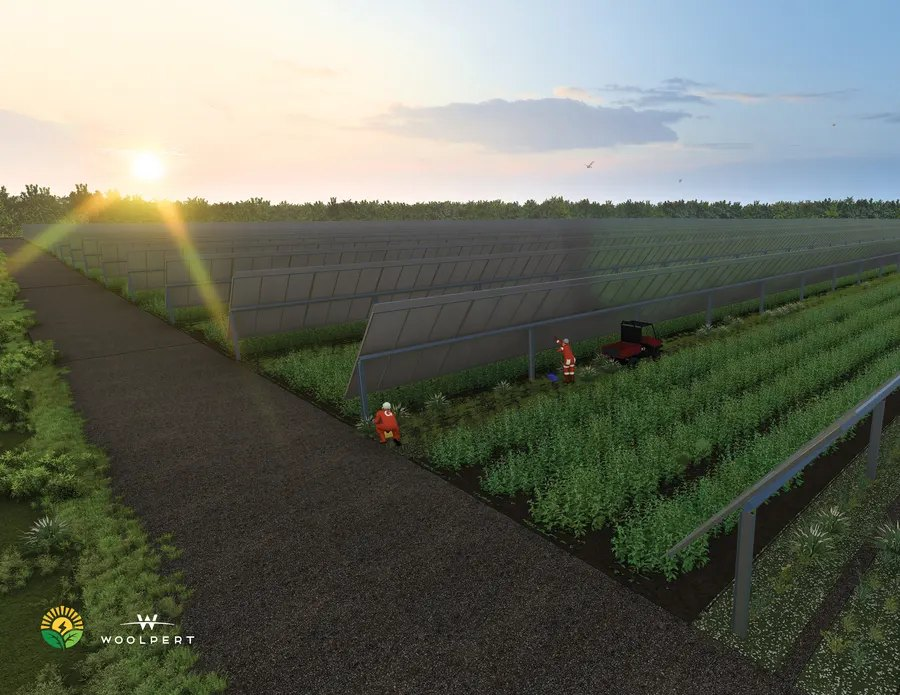
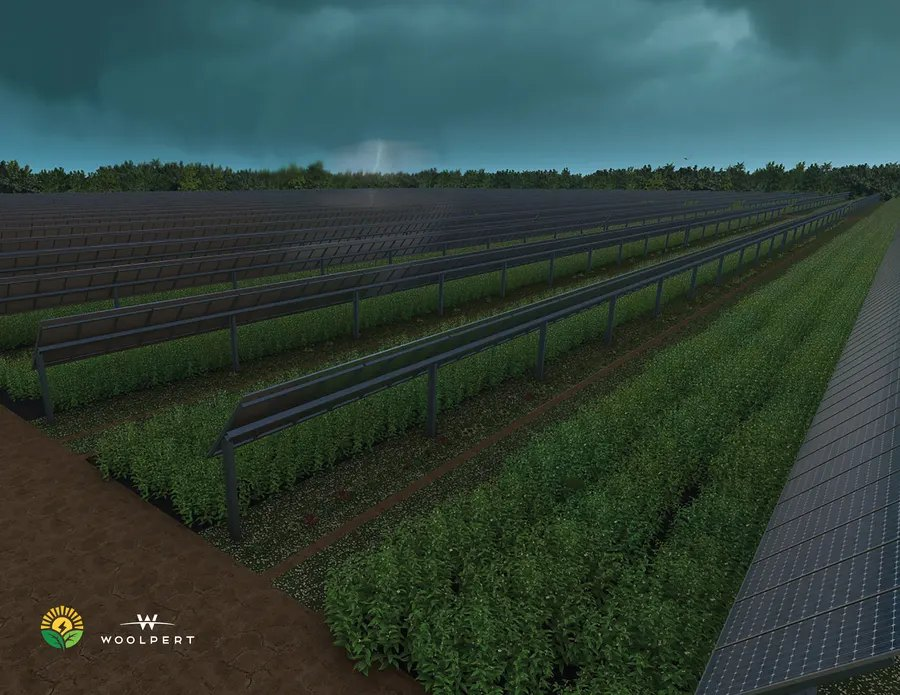
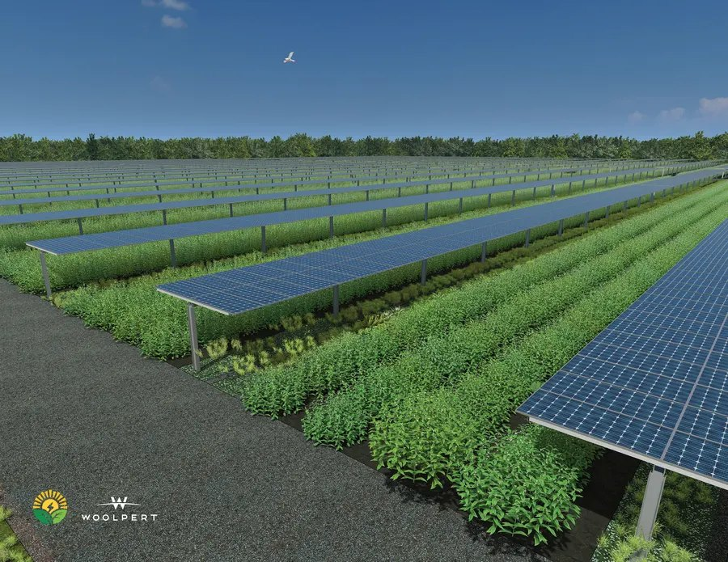

Energy capture
Single-axis tracking and modular electrical architecture support utility-scale generation.
Solargation is a modular infrastructure platform that integrates utility-scale solar generation, agricultural irrigation, and active land use into a single field-ready system.
Solargation turns that tension into a shared opportunity: elevated solar arrays are paired with irrigation and material dispersal so the land can keep serving agriculture while producing marketable energy.
Single-axis tracking and modular electrical architecture support utility-scale generation.
Water and agricultural inputs can be distributed through the same field infrastructure.
Clearance, row spacing, and operating positions are designed around agricultural use.

The Solargation Block is designed to move with the needs of the day: generating power, irrigating crops, supporting harvest access, cleaning panels, and stowing safely for weather events.

Sprinkler assemblies are integrated with the solar structure to reach crop rows below.

Tracking positions help arrays capture sunlight throughout the operating day.

Panel height and tilt are configured to allow equipment and workers to move through the field.
Weather-aware positioning reduces exposure during high-wind and storm events.
Solargation pairs photovoltaic production with irrigation and agricultural material dispersal in a single patented system.
Block-based electrical groups, inverter groups, and tracker segments create a repeatable path from prototype to full project scale.
The concept supports irrigation automation, remote monitoring, security, and future soil analytics within a unified operating framework.
Configurations can be adapted for high wind, floodplain, seismic, and site-specific agricultural requirements.
The teaser: Solargation reframes the land-use problem by making energy infrastructure perform an agricultural function, inviting visitors to explore how the system works technically, operationally, and financially.
High-definition renderings show how the same infrastructure changes posture for power, water, cleaning, pasture, harvest, and weather resilience.

Integrated cleaning and irrigation capability
Pasture and agricultural use
Afternoon energy capture
Storm-aware safe stow
Noon horizontal positioningThe prototype report identifies two site-adaptable configurations: a higher-density 2P configuration and a streamlined 1P configuration for more demanding wind environments.
The supporting pages convert each infographic into a web-ready explanation using the same Solargation visual system. They are linked below for a cohesive GitHub-ready site structure.
Compare agricultural land-equivalent loss for traditional solar PV, agrivoltaics, diesel, natural gas, and yield-enhancing Solargation.
Show how direct PV water use and avoided irrigation can shift Solargation into a net water-saving farm-level case.
Explain the LCOE comparison using EIA AEO2026 values and the illustrative USDA irrigation-support adjustment.
Food and energy together: compare crop-yield impacts and the illustrated Solargation yield uplift from irrigation, fertigation, and soil analytics.
Read the featured T-Mobile/Phoebus Puerto Rico announcement and how it connects to Solargation deployment.
Solar. Irrigation. Farming. Data. Resilience. Solargation brings them together into a single land-use platform that can now be explored through dedicated land, water, energy-cost, and yield pages.
Back to top